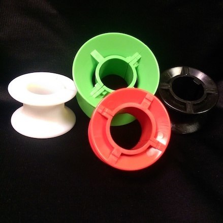
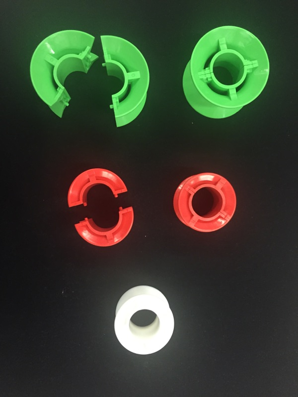

Spools, roller conveyor spools, split spools, o ring pulley, and C clips
We stock both Regular Standard Spools and Split Spools for your Line Shaft Conveyors. Our spools are tough and manufactured to keep up with the daily operations of any large Distribution Center. All our spools are used on 1” diameter lineshafts. Spools are available in 4 different styles:
-
White Standard Spools- These are your standard spools used with polyurethane belts. They are usually replaced when needed. To install these the conveyor system is taken apart and the line shaft is dropped. This is usually done during a scheduled maintenance. Standard diameter is 1”
-
Red Split Spools- This is a great product. The spool actually splits apart and is able to be put on the conveyor without removing the line shaft. We highly recommend these with our rope twisted o-rings.
-
Green Speed up split spool-The green spool is very similar to our red spool. It also splits apart for easy installment. However, it is a larger spool. Using these larger spools will increase your roller speed by 44%.
-
Black keyed spool- this is a one-piece spool. These are specifically designed for curves, inclines, or where greater drive is needed. They are intended to be used where there will be no accumulation or blockages.

Along with our spools we recommend plastic C clips. Plastic C clips are placed on both sides of the spools keeping them in place. Using Plastic C Clips also extends the lifespan of your spools. This keeps your polyurethane belts or twisted o-rings from wearing unevenly and failing prematurely. These c clips are a great investment for very little money.
Spilt spools do not require you to disassemble the shaft.